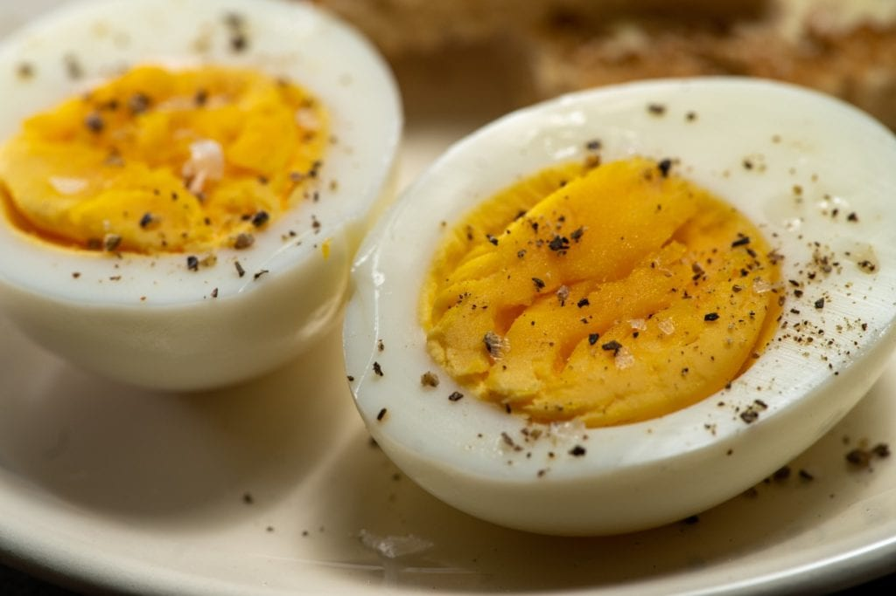

INDEX
INDEX
| Category:
|
|
| Hard Not-Boiled Eggs
|
| Ex Culina:Alton Brown
|

|
Ingredients:
6 large eggs, preferably stored on their sides
Directions:
- Add an inch of water to a 3-to 4-quart saucepan with a tight-fitting lid. Bring the water to a boil over
medium-high heat. Fill a large bowl with room temperature water and have it standing by near the cooktop.
- When the water reaches a boil, retrieve eggs from the refrigerator and place in a folding steamer basket.
Carefully lower into the pot, cover, and steam for exactly 11 minutes for a set egg that still has a
slightly creamy yolk. If you’re looking for something harder, go for 12 to 13 minutes.
- Carefully remove the steamer basket and transfer the eggs to the bowl of water. Allow them to cool down just
enough to handle comfortably, 30 seconds to 2 minutes max. Carefully crack the shell by tapping on a flat
surface and peel under the water, being careful to remove both the shell and the membrane just underneath.
- Pat dry and consume whole while still warm. If you’re planning to split in half for say, deviled eggs, cool
thoroughly before slicing.
Yield:6 servings
Comments:Specialized Hardware: Steamer basket.